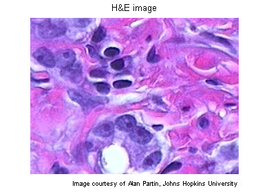
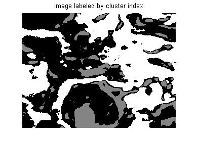
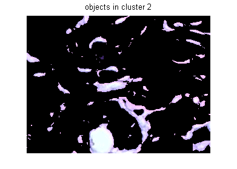
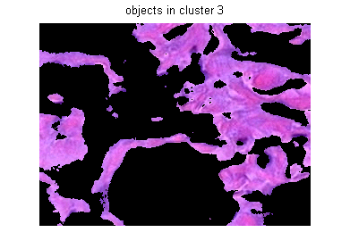
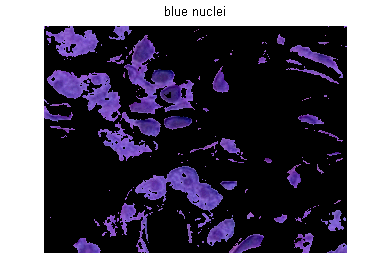

Your goal is to segment colors in an automated fashion using the L*a*b* color space and K-means clustering. This demo requires the Statistics Toolbox.
Read in hestain.png, which is an image of tissue stained with hemotoxylin and eosin (H&E). This staining method helps pathologists distinguish different tissue types.
he = imread('hestain.png'); imshow(he), title('H&E image'); text(size(he,2),size(he,1)+15,... 'Image courtesy of Alan Partin, Johns Hopkins University', ... 'FontSize',7,'HorizontalAlignment','right');
How many colors do you see in the image if you ignore variations in brightness? There are three colors: white, blue, and pink. Notice how easily you can visually distinguish these colors from one another. The L*a*b* color space (also known as CIELAB or CIE L*a*b*) enables you to quantify these visual differences.
The L*a*b* color space is derived from the CIE XYZ tristimulus values. The L*a*b* space consists of a luminosity layer 'L*', chromaticity-layer 'a*' indicating where color falls along the red-green axis, and chromaticity-layer 'b*' indicating where the color falls along the blue-yellow axis. All of the color information is in the 'a*' and 'b*' layers. You can measure the difference between two colors using the Euclidean distance metric.
Convert the image to L*a*b* color space using makecform and applycform.
cform = makecform('srgb2lab');
lab_he = applycform(he,cform);Clustering is a way to separate groups of objects. K-means clustering treats each object as having a location in space. It finds partitions such that objects within each cluster are as close to each other as possible, and as far from objects in other clusters as possible. K-means clustering requires that you specify the number of clusters to be partitioned and a distance metric to quantify how close two objects are to each other.
Since the color information exists in the 'a*b*' space, your objects are pixels with 'a*' and 'b*' values. Use kmeans to cluster the objects into three clusters using the Euclidean distance metric.
ab = double(lab_he(:,:,2:3)); nrows = size(ab,1); ncols = size(ab,2); ab = reshape(ab,nrows*ncols,2); nColors = 3; % repeat the clustering 3 times to avoid local minima [cluster_idx cluster_center] = kmeans(ab,nColors,'distance','sqEuclidean', ... 'Replicates',3);
For every object in your input, kmeans returns an index corresponding to a cluster. The cluster_center output from kmeans will be used later in the demo. Label every pixel in the image with its cluster_index.
pixel_labels = reshape(cluster_idx,nrows,ncols);
imshow(pixel_labels,[]), title('image labeled by cluster index');Using pixel_labels, you can separate objects in hestain.png by color, which will result in three images.
segmented_images = cell(1,3); rgb_label = repmat(pixel_labels,[1 1 3]); for k = 1:nColors color = he; color(rgb_label ~= k) = 0; segmented_images{k} = color; end imshow(segmented_images{1}), title('objects in cluster 1');

imshow(segmented_images{2}), title('objects in cluster 2');imshow(segmented_images{3}), title('objects in cluster 3');Find the image that contains the blue objects. Notice that there are dark and light blue objects in this image. You can separate dark blue from light blue using the 'L*' layer in the L*a*b* color space. The cell nuclei are dark blue.
Recall that the 'L*' layer contains the brightness values of each color. Find the cluster that contains the blue objects. Extract the brightness values of the pixels in this cluster and threshold them using im2bw.
The cluster_center contains the mean 'a*' and 'b*' value for each cluster. The blue cluster has the second largest cluster_center value (determined experimentally).
mean_cluster_val = zeros(3,1); for k = 1:nColors mean_cluster_val(k) = mean(cluster_center(k)); end [mean_cluster_val,idx] = sort(mean_cluster_val); blue_cluster_num = idx(2); L = lab_he(:,:,1); blue_idx = find(pixel_labels == blue_cluster_num); L_blue = L(blue_idx); is_light_blue = im2bw(L_blue,graythresh(L_blue));
Use the mask is_light_blue to label which pixels belong to the blue nuclei. Then display the blue nuclei in a separate image.
nuclei_labels = repmat(uint8(0),[nrows ncols]);
nuclei_labels(blue_idx(is_light_blue==false)) = 1;
nuclei_labels = repmat(nuclei_labels,[1 1 3]);
blue_nuclei = he;
blue_nuclei(nuclei_labels ~= 1) = 0;
imshow(blue_nuclei), title('blue nuclei');